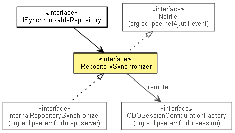

org.eclipse.emf.cdo.server
Interface IRepositorySynchronizer
- All Superinterfaces:
- IContainer<CDOSession>, INotifier
- All Known Subinterfaces:
- InternalRepositorySynchronizer
- public interface IRepositorySynchronizer
- extends IContainer<CDOSession>

Synchronizes a synchronizable repository with a master repository.
- Since:
- 3.0
- No Implement
- This interface is not intended to be implemented by clients.
- No Extend
- This interface is not intended to be extended by clients.
getRetryInterval
int getRetryInterval()
setRetryInterval
void setRetryInterval(int retryInterval)
getLocalRepository
ISynchronizableRepository getLocalRepository()
getRemoteSessionConfigurationFactory
CDOSessionConfigurationFactory getRemoteSessionConfigurationFactory()
getRemoteSession
CDOSession getRemoteSession()
isRawReplication
boolean isRawReplication()
setRawReplication
void setRawReplication(boolean rawReplication)
- Since:
- 4.0
getMaxRecommits
int getMaxRecommits()
setMaxRecommits
void setMaxRecommits(int maxRecommits)
getRecommitInterval
int getRecommitInterval()
setRecommitInterval
void setRecommitInterval(int recommitInterval)
Copyright (c) 2011, 2012 Eike Stepper (Berlin, Germany) and others.